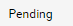
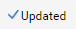
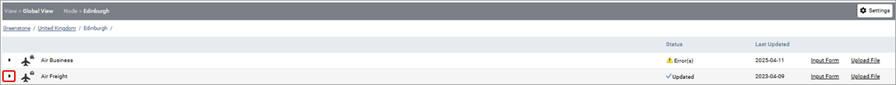
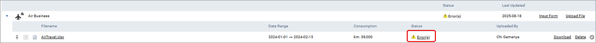
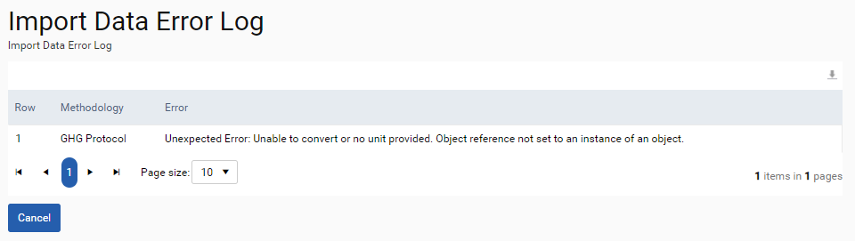
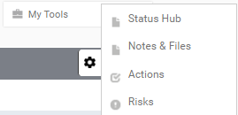

When you have navigated back to the organisation structure you will be able to see the status of any uploaded files. If emissions are currently being calculated, the file status will show as pending (

). Please note that this process could take up to 30 minutes depending on the file size and the time at which it was uploaded. Once the data has finished processing this symbol will be displayed (
). However, if there are any calculation errors then this symbol () will be displayed and you will be required to edit the data to correct it.By clicking on the arrow to the left of each emission source, a list of files that have been uploaded will be displayed, providing the following information:

If the status of a file shows ‘Error(s)’, this is the file which contains the error reported at the data source level. By clicking on the error link, the ‘Import Data Error Log’ will appear to provide further details of the error.


As a user with read and write access you can edit the data file, download or delete it. If you do not have read and write access, then you have the option to ‘View’ locked data, but not to edit or amend it.
The clock symbol () to the right of the ‘Delete’ option allows you to view the audit log for this particular file, detailing the history of data uploads to that emission source and any changes that have been made.
To review any ‘Notes & Files’, ‘Actions’, or ‘Risks’ that have been uploaded to the view in which you are operating, select the ‘My Tools’ option from the top-right of the table. This will give the option of viewing, editing, or adding to any of these sections.
